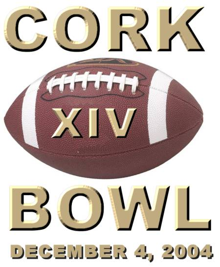

December 4, 2004 |
 |
 |
 | ||||||||
 |
 | |||||||||
 |
 | |||||||||
 |
 | |||||||||
 |
 | |||||||||
 | ||||||||||
Quarterback 6th Year - 5'9 - 145 After a forgettable performance in Cork Bowl 12, Tony Cork retired yet again prior to Cork Bowl 13. The retirement was at least the fourth of his Cork Bowl career. Despite his retirement, and to no surprise to all of those involved, Cork managed to find his way onto the field last year anyway. When Reggie Truitt went down midway through the 2nd quarter for the Zo’ril, the old coach came on to quarterback the team the rest of the way. “Even though half the years you don’t see him listed on either roster, you know he’s going to end up on the field anyway,” commented long-time quarterback Willy Truitt.
Cork’s retirement came just months before the league announced that there would be no rushing the quarterback for the first time in league history due to the return of Kirby Newell to the field. Cork was more than a little upset when he heard the news. “I was hot to say the least,” remarked the veteran. “I can still throw the ball. With no rushing the quarterback, I would never have retired in the first place.”
As for his impromptu return to the field last fall, it was a highly successful one. Cork came on to complete 35 of his 50 passes including 9 touchdowns and just 2 interceptions in a little over a 2 quarters of action. After scuffling out of the gates, Cork completed 30 of his final 39 passes and sparked a Zo’ril comeback that cut the lead from 35 all the way down to 14. The shocking performance brought back memories of his Cork Bowl 8 performance when Cork completed a record 51 passes for 18 touchdowns. “Give me a whole game with no rushing the quarterback, and you can expect to see similar numbers,” boasted Cork.
Cork’s retirement came after a disappointing Cork Bowl 12 in which he completed just 25-of-50 passes for 8 touchdowns and threw a career-worst 6 interceptions. Leading receiver Patrick Cork went down midway through the first quarter and Cork was short-handed the rest of the way. Cork was hounded by a relentless pass rush that day and was forced to make hurried throws and had to try to complete passes on the run. However, with no pass rush, Cork’s accuracy and leadership skills are second to none. “He’s a pocket passer, no doubt,” added Chris Cork. “If he has time to throw he’s highly effective. That old right arm still has some firepower left in it.”
The one shaky part of Cork’s return is on the defensive side of the ball, but Cork has petitioned the league to have a defensive replacement for this year's game. “We're still working on finding a suitable replacement, but there is no doubt we'll have one well in advance for this year's game,” commented Patrick Cork. Cork ranks 3rd all-time in most passing categories (125 completions, 202 attempts, 40 touchdowns), and with a decent showing should move past Reggie Truitt into second place in completions, attempts and touchdowns.
|
Quarterback 8th year - 6'4 - 185 Kirby Newell spent six seasons becoming one of the best receivers in the history of Cork Bowl. He now plans on spending the next six years showing he’s one of the best quarterbacks too. After a career-threatening injury in the summer of 2000, Newell was out of the game for three years. Knowing he would probably never be able to play again, Newell had a hard time letting go. “Cork Bowl has given me so much and I wasn’t ready to call it quits,” said Newell. “I didn’t have a whole lot of options left if I wanted to keep playing but I thought I’d give it a shot at convincing the league to let me play quarterback.”
Newell petitioned the league offices about becoming the first one-way player in Cork Bowl history prior to last year’s game. After much deliberation, the league granted Newell’s request and his long road to recovery found him back on the field for Cork Bowl 13 last November. “We haven’t changed many rules since we started, but Kirby was definitely an exception to the norm,” remarked Commissioner Patrick Cork. “His persona, popularity, attitude and love for the game were missing when he was gone. It took a lot of thought, but we had to get him back on the field. Plus we were getting a lot of nasty letters from fans asking for some endzone celebrations. They really missed the windshield wiper dance.”
Newell quarterbacked the Grisons to victory in his return completing 42 of 71 passes for 15 touchdowns while throwing just one interception. “I always said I could have dominated as a quarterback, and I think my performance last year proved me right,” added Newell. “I put up those numbers in my first ever game as full-time QB too. Think of what I can do once I get back into the swing of things. With Willy playing receiver now, his records won’t stand for much longer.”
Going into last year’s game, Newell had thrown just 42 passes in his career. “I was too busy catching passes and scoring touchdowns to worry about throwing the ball,” added Newell. “Now that I can focus completely on passing, the sky is the limit.” In what could be a classic battle of right arms, Newell wants to show that he, not Tony Cork, is the best leader in this year’s game. “Coach’s time has past. I made Greg Howard the MVP of last year’s game for goodness sakes. No other quarterback has ever accomplished anything even close to that. To make Greg look that good on offense is one of my crowning athletic achievements. It ranks right up there with my performance in the Martinsville game my junior year when Barker pulled me out after I scored our team's first 8 points...never mind. My next challenge will be to get Tomlinson to catch more than 4 passes in a game.”
Newell will have a very solid group of receivers to throw to, much like he did last year. Brooks Wilson and Reggie Truitt are the proven targets, but Willy Truitt emerged as a serious weapon in the second half of last year’s game. Add to that Newell’s mission to make Tomlinson look good and Newell is confident in pulling off another win. “I’m the only undefeated quarterback left in the game,” added Newell. “I plan on keeping it that way after this year.”
| ||||||||||||||||||||
Wide Receiver 14th Year - 5'11 1/2 - 145 One year after being forced out of Cork Bowl 12 with a fractured collarbone, Patrick Cork was back on the field for Cork Bowl 13 with a chip on his shoulder. “Actually, I probably have a little chip off my shoulder since it didn’t heal completely right, but I was wanting to prove it wouldn’t change the way I play the game.” Cork returned to the field with what he described as a decent outing, catching 10 passes and scoring 3 touchdowns. “It was nowhere near what I expected to be honest,” remarked Cork. “I feel I’m much better than a 10 catch per game player. Kirby and I had some trouble connecting early on and never got in a rhythm. That shouldn’t be a problem this year with the Old Coach back under center.”
Cork tallied just 3 receptions before leaving injured two years ago. His 13 combined catches over the past two seasons are lower than any of his single-game performances dating all the way back to Cork Bowl 5. Before the last two years, Cork was averaging nearly 19 catches and 6 touchdowns a game over the previous six seasons. Some think that the injury, followed by a somewhat down year may be signs that Cork is slowing down. “I have really dedicated myself this offseason to prove to everyone that’s not the case,” said Cork. “The older you get, the more ways you have to figure out how to get things accomplished on the field. I can’t just show up on game day and catch 18 passes like I did when I was younger. All the extra work I’ve put in will make this year’s win that much more enjoyable.”
Although the numbers weren’t there last year, the one stat that really counted was – a win. “It had been a long time since we’d won a Cork Bowl and it was definitely nice to get another ring,” added Cork. “You forget how good it feels to win after you lose a couple games in a row. You have to make sure the doubts don’t creep into your mind and you have to stay positive and confident no matter how tough things get. The way we came together and played as a true team last year was especially satisfying. To have basically the same group of guys together again this year, and to have a cagey veteran under center, is a huge confidence builder.” Each of the Grisons receivers tallied at least 8 catches and everyone found the endzone at least once. "Had Kirby not been erratic out of the gates, there's no telling how many points we would have scored."
Cork’s 143 career receptions and 49 touchdowns rank first on the career list. “I was hoping to go over 150 catches in last year’s game, but it didn’t happen. That might be a blessing because this year I have the opportunity to get my 150th catch and my 50th touchdown in the same game. I wouldn’t want anyone other than my dad to be the one to throw me those passes either. He’s been throwing me passes in the backyard since I was barely walking so it would be even more memorable to have him a part of those accomplishments.”
|
Wide Receiver 11th Year - 5'10 - 155 After garnering his first MVP award in Cork Bowl 12, Reggie Truitt had his sights set on back-to-back MVP honors heading into Cork Bowl 13. However, a collision with Robert Trimble’s knee in the first quarter ended any thoughts of such a feat. Visibly shaken, Truitt would continue playing into the second quarter before finally coming out of the game with 11 minutes to go in the first half. “He wasn’t the same after taking the knee to the head,” remarked brother Willy. “He was groggy, he dropped a couple of passes he normally catches and he was just not the same player I’ve grown accustomed to playing with over the years. It was quite a blow to our team to lose him that early.”
Truitt was replaced on offense by Tony Cork and on defense by Jake Hoalt with the Zo’ril trailing 35-21 and they never got any closer than a 14 point deficit. “Reggie was concussed, there’s not much doubt about that,” added athletic trainer and teammate Josh Williamson. “It’s surprising he played as long as he did with the obvious symptoms he was showing, but he’s a gamer.”
Truitt’s Cork Bowl 12 MVP performance was one for the ages. He hauled in 12 passes for 5 touchdowns and set a Cork Bowl record with 5 interceptions, returning one for a touchdown. The 12 catches tied a career high and the 5 touchdowns were also a career best. Despite only playing 1 1/2 quarters last year, Truitt still caught 6 passes and scored 2 touchdowns. “I felt I was well on my way to a career day,” remarked Reggie. “It’s unfortunate I got dinged up and couldn’t finish. With Wilson and I catching everything thrown our way, we definitely would have had a great shot at winning the game. Now you add Willy as a third receiver, and we have a very explosive receiving unit for Kirb.”
Reggie’s defense has been one of his strong suits over the years. His 12 interceptions are tied for first all-time and his 83 tackles are tops on the list. His ability to design a number of blitzing packages over the years to wreak havoc on opposing quarterbacks, but with the no-rushing rule in place he was forced to play a more conventional defense last year. “We still have a few different packages we can use to shake things up,” answered Truitt. “That’s what great defensive coordinators do – they adjust to the game.”
|
Wide Receiver 14th Year - 6'2 - 185 If there is one quote that would capture what Chris Cork’s last two seasons have been, it would undoubtedly be, “The rumors of my demise have been greatly exaggerated.” After most of the critics had written him off after a number of sub-par performances, Cork was back to his old tricks again last year finding the endzone 6 times and hauling in 9 passes in the Grisons victory. “Most people said he was on the downside of his career,” said Patrick Cork. “People were comparing him to Tim Brown – saying he’d lost a step or two. But just like Brown, Chris never had that step to start with – he just happened to be stuck in a couple of bad offensive systems. When we got back to doing what we wanted to the last couple of years it was like old times.”
Cork caught 13 passes two seasons ago and 9 passes last year. In both games he scored 6 touchdowns. “I’ve never beaten people because of my speed or quickness,” admitted Cork. “I beat them with my head. It’s not always the fastest and strongest that excel in Cork Bowl – you have to be smart and know how to get open too.” Despite a couple down years, Cork still ranks second in receptions (111) and touchdowns (42) – nearly doubling the closest active player. After Patrick was injured, and without another go-to receiver, Chris caught over half of Tony Cork’s completed passes in the Cork Bowl 12 blowout loss. His 13 receptions were his most since Cork Bowl 8. Last year, his impressive performance was spurred by the return of long-time rival Brooks Wilson. “Wilson’s return definitely added a little fuel to the fire,” added Cork. “The only thing I worried about was the more passes I caught, the more chances he would get to cheapshot me. That’s why I decided to score basically every time I caught the ball.” With Wilson back again this year, Cork is vowing to put up good numbers yet again. “I think we kind of took it easy on him last year since he’d been away for so long,” added Cork. “This year there is no mercy. He’s back in the heat of battle and he’ll be tested yet again. We didn’t attack him much last year because Reggie was hurt and there were other weak spots on the team. I know it’s hard to believe there were spots weaker than Wilson’s, but there really were.”
Cork’s 7 tackles last year moved him into second place on the all-time list with 81. His 12 interceptions are still tied for first all-time. “We played so much zone last year that it was hard to get interceptions,” commented Patrick. “We were letting them complete short passes and then making tackles. If we go back to more man-to-man coverage this year, Chris will get himself another pick or two. Nobody baits a quarterback into throwing an interception better than Chris. With those serpent arms of his, no pass downfield is safe. Plus, I think he knows Kirby’s game better than Kirby does himself. Plus, if Kirb is foolish enough to throw to Wilson all day, he deserves to get picked off a few times.”
|
Wide Receiver 6th Year - 6'1 - 172 Another major storyline last year was the return of Brooks Wilson. Wilson, who was one of the founding fathers of Cork Bowl, hadn’t played since the snow bowl known as Cork Bowl 5. Having missed 7 years of football, few expected Wilson to make much of an impact on the game but he surprised almost everyone with his 14 reception, 6 touchdown performance. The only one not surprised was Wilson himself. “I said all along that I was going to be the best receiver in the game and I think I showed that to everyone,” boasted Wilson. “People said I was too old, I’d been away too long, I had too many kids to take care of that I couldn’t get to practice every day – I heard all that. People should have learned by now to never underestimate me.”
Once Reggie Truitt was banged up early in the game, Willy looked at Wilson early and often as his go-to receiver. “I was completely comfortable being the #1 man,” added Wilson. “I was expecting to be that anyway going into the game. I expect to lead our team in receptions and touchdowns again this year too.”
“To take off 7 years and come back and have a career day is quite impressive,” remarked Willy Truitt. “Brooks really stepped up when we needed him to. He was like a father out there to all of us.” With Wilson back in the flow and a healthy Reggie Truitt, the two should be an effective pair of wideouts for Newell to throw to. “I have absolute confidence going to Wilson anytime I need to,” replied Newell. “For one, he’ll be guarded by Chris most likely and you want to attack the weak link as much as possible. We have a lot in common too – the most important thing being our bitter rivalry with Chris. Chris has been playing against either me or Wilson since Cork Bowl began. It will be Chris’s worst nightmare to go up against both of us.”
“Wilson was solid last year, I won’t deny that,” answered Chris Cork. “However I was a little worried after the game because his number of cheapshots dropped dramatically from previous years. I don’t know if he’s getting old or if he was just too tired to cheapshot people after the whistle or away from the ball, but I know he seemed a little softer than I remembered him being. Now you throw him onto the same team with people like Tomlinson and people like Kirby who can only play offense, and they are starting to look more like a roll of Charmin than a football team.”
|
Wide Receiver 9th Year - 5'7 - 150 To say Greg Howard rebounded last year would be a gross understatement. After posting just 4 receptions in Cork Bowl 11 and only 2 receptions in Cork Bowl 12, Howard made one of the most impressive leaps in Cork Bowl history when he hauled in a game-high 15 passes and scored 5 touchdowns to earn MVP honors last year. “He was absolutely amazing,” remarked Patrick Cork. “He was in such great shape and he kept getting better and better each quarter. By the time the game ended, there was no doubt which player dominated the game.”
Howard’s previous career best game was in Cork Bowl 10 when he caught 12 passes and scored 7 times. Despite those numbers, he didn’t dominate that game like he did last November. “Greg has been saying he was going to ‘dominate all over’ everyone for the past 8 years in pregame shows,” added Kirby Newell. “We always made fun of him, but it finally happened last year. As much as I hate to say it, Greg was the best player on the field.”
After catching just 5 passes in the first half, Howard caught 6 balls in the third quarter and scored three of his team’s four touchdowns to help the Grisons keep their 28 point lead. “Most of us were starting to wear down a little in the third quarter and Greg really stepped up,” added Kevin Ryan. “His energy was a big boost.” Howard’s hands had become a hot topic over the past few years thanks to a growing number of dropped passes, but his performance last year was nearly flawless. “I think it shows how well I played last year at quarterback,” added Kirby Newell. To go along with the 15 catches, Howard also led the team in tackles with 12. “A lot of people thought my effectiveness on defense would go down with the no-rushing rule” commented Howard. “But it didn’t bother me at all. We played a lot of zone defense and I was able to run free and make tackles all over the field.”
After last year’s victory, Howard’s career record now stands at 6-2 all-time in Cork Bowls. “The only two games I’ve lost were the first one I ever played in and Cork Bowl 10,” added Howard. “The first one I had no idea what was going on and the second one we made a huge comeback and almost won in the final minutes.” Once again, Howard will surely be the best conditioned player on either side. “The older we get the more important we see how much conditioning plays a part in this game,” replied Patrick Cork. “Greg’s in top physical condition and doesn’t have to take plays off or pace himself. It’s a huge bonus to have a fresh body on the field at all times.” “I feel I’ve made the leap from a solid player to one of the best,” said Howard. “I have no plans on slowing down either. Most of these guys have had their moment in the sun, now it’s time for me to be the man.”
|
Wide Receiver 10th Year - 5'9 - 145 For the first time since the second half of Cork Bowl 6, Willy Truitt found himself running routes on offense instead of throwing passes last fall. When brother Reggie left in the second quarter with a concussion, Tony Cork came on to quarterback the Zo’ril and Willy moved to receiver. “I’ll be honest, I didn’t feel comfortable at all for quite a while out there,” responded Willy. “Once I got into the flow I felt great. Unfortunately for us, the adjusting period from when Coach first came in put is too far behind to catch up.”
Truitt has made a name for himself as a quarterback over the years. In 8 seasons, he has amassed 271 completions on 472 attempts – far away the highest totals of any player. His 105 touchdowns are more than twice as many as any other player, and are nearly as many as the next three passers combined on the all-time list. “I’ve proven everything I can as a quarterback,” added Willy. “I’ve won championships, I’ve set every record in the book, so there’s not a lot left for me to prove from that standpoint. Now I feel the challenge to start a legacy as a great receiver too.”
Before moving to receiver last year, Truitt was 15-for-30 with 3 touchdowns and an interception. Truitt took advantage of his fresh legs at receiver in the third quarter as he caught 6 passes and scored 3 touchdowns to start the Zo’ril comeback. He finished the game with 12 catches and 3 touchdowns – playing just over 2 quarters of the game at receiver. “I think with a full game at receiver I can have just as much of an impact as guys like Reggie and Patrick and the other top receivers,” added Truitt. “I’ve got plenty of routes left in my legs. Most of the other guys have been taking a pounding and wearing down for the past decade. I see a great opportunity to really establish myself as something more than just a quarterback. With me, Reggie and Wilson together, Kirb shouldn’t have any problems finding an open receiver every play.”
“Willy was very good last year when he came in at receiver,” replied Patrick Cork. “He showed a lot of quickness and was able to get open a number of times. He also had fresh legs. His biggest challenge is going to be that he has to show he can play at that level for an entire 100 minutes. I don’t doubt that he can do it, I’m just saying he could be in for a rude awakening after standing in the pocket and throwing passes for the past 8 years. The difference between quarterbacking Cork Bowl and playing receiver in Cork Bowl is more than words can describe.”
|
Tight End 9th Year - 5'11 - 155 2-5. That was Kevin Ryan’s career record in Cork Bowls prior to last season’s victory. Ryan, a veteran who made his debut all the way back in Cork Bowl 4, had lost 5 of his last 6 games and was beginning to wonder if he would ever win another ring. “After you lose a few it’s not a big deal,” commented Ryan. “But then you’ve lost 3 and then 4 and then you start wondering if you’ll ever win again. Then in Cork Bowl 11 I had my best game and we won, then we win again last year and I’m beginning to wonder if I’ll ever lose again.”
Ryan’s performance in Cork Bowl 11 was by far the best of his long career. His 13 catches and 4 touchdowns were integral in the victory, and much was expected from him the following year. But like most players on the Meerkats, Ryan struggled to a 5 catch, 3 touchdown performance in CB 12 and was banking on a rebound last year. Although he didn’t approach the level he did two years earlier, Ryan’s 8 receptions brought him closer to where he wants to be. “Now that’s he’s not sharing time at QB, we have to expect Kevin is going to give us 8-10 catches and a few touchdowns,” commented teammate Patrick Cork. “He’s not going to beat you with his speed, but he is one of the few guys still playing that loves contact. He enjoys nothing more than running someone over.” “Either Tomlinson or Hoalt is going to have to guard me,” added Ryan. “Whoever it is that gets the assignment is in for a long day. They’re both faster than I am so the only way I’m going to get yards after the catch is the old-fashioned way. I don’t think either of them is going to like that either.”
Ryan has a diverse stat line having spent parts of several games sharing time at quarterback. “I had been playing quarterback half the time so I was only getting 4 or 5 catches a year,” added Ryan. “Now that I’m back to playing receiver full-time, I see no reason why I can’t consistently hit double digits in receptions.” Ryan has been suffering from several lingering health problems over the past few years and hopes he can get through another Cork Bowl unscathed. “I dislocated my shoulder about 3 years ago and it’s never been the same,” admitted Ryan. “In fact, it popped out of place in Cork Bowl 11 but I was able to get it back in place. I also broke a rib this year and it never healed correctly. I’m pretty beat up, but it’s not going to change the way I play the game. I’m just two wins away from getting my career record up to .500 and I don’t plan on stopping until I get to that point.”
|
Wide Receiver 8th Year - 6'0 - 165 It’s beginning to sound like a broken record. Every year people around the league discuss the phenomenal debut game of Ryan Tomlinson his rookie year in Cork Bowl 7 and wonder why he hasn’t approached that type of performance in the years following. The answer remains a mystery. By now everyone knows Tomlinson’s story. As a rookie, Tomlinson hauled in 11 passes and scored 2 touchdowns in his team’s Cork Bowl 7 victory. Since then, Tomlinson has totaled 27 catches in 6 seasons (an average of 4.5 per game) and has never scored more than 2 touchdowns in a game. For just the third time in his career, Tomlinson posted more than 4 receptions in a game last fall when he caught 5. “If I’ve said it once, I’ve said it a thousand times, I haven’t had someone figure out how to use me properly since my first season,” answered Tomlinson. “Look at the game film and see the types of routes I was running and the way we set up the defense. It’s all right there for everyone to see but every year it’s been the same old thing. I have a very strong feeling that Kirby Newell’s presence at quarterback this year is going to solve the problem. The guy is an offensive mastermind.”
Tomlinson excelled in his first year with Reggie Truitt quarterbacking the team, and then had all-time leading passer Willy Truitt as his signal caller four of the following five seasons. “Willy and I never clicked,” added Tomlinson. “It’s one of those things you can’t really explain. Obviously I have the ability to put up good numbers – Reggie showed that. Sometimes it takes breaking away from the situation to solve the problem. Kirb knows my game. He knows how to get me the ball – heck he completed a pass to me last year even though I wasn’t on his team. I think that shows the desire he has to find me on the field.”
“When someone comes into the game and puts up the numbers he did in Cork Bowl 7, you think as the commissioner of the league that you’ve caught lightning in a bottle,” remarked Patrick Cork. “You want to lock that player up for a long time so we gave Tomlinson a 10-year deal. To this point, we haven’t received the return on investment we were hoping for, but he’s still got four more years on his deal to show us we didn’t make a mistake. From the standpoint of the fans, he’s got a cult following. We’ve sold more Tomlinson jerseys than any other player. I think the average fan can connect with him more than some of the other guys. They can see themselves out there doing everything Tomlinson does and they love that.”
| ||||||||||||||||
Defensive Replacement 3rd Year - 5'7 - 155 On September 23rd, Brian Garrard was named Tony Cork's defensive replacement for the Dingoes. Garrard, who was a founding member of Cork Bowl 14 years ago hasn't seen any time on the field since he was knocked out of the game in Cork Bowl 2 with a chipped tooth. "It's an honor and a privilege to be invited back," admitted Garrard. "I never really thought I'd play again although I did entertain the idea a few times. After watching Wilson make his comeback last year, I knew I could do it if I was given the opportunity." Garrard will set a new Cork Bowl record for most years between appearances when he plays this December. Brooks Wilson returned for last year's contest after missing 7 Cork Bowls, and Garrard will return after missing 11 games. He served as the offensive and defensive coordinator for the Grisons in last year's game.
"We really have no idea what to expect from him, but we need his attitude and leadership on the team," commented Patrick Cork. "Garrard loves to win as he showed last year with the dedication he showed coaching us to victory. To have him out there with us for half the game will be even better." In his last appearance on the field in Cork Bowl 2, Garrard tallied 2 receptions and no tackles in limited playing time. "I think it shows how good of a defender Brian was that his guy didn't catch any passes for him to make a tackle," added Chris Cork. "I remember we nicknamed him 'blanket" back then for his cover skills."
Garrard will likely be matched up on Ryan Tomlinson for most of the game. "I watched a lot of film on Tomlinson preparing for last year's game," remarked Garrard. "I know everything there is to know about his game, or lack thereof. I have no doubt that Kirby will try to go at me early and often to get Tomlinson involved and to test me, and I'm totally confident that I'll win that head-to-head battle. I may not have the foot-speed I once had, but I've still got the mental edge it takes to be a great cover corner."
|
Defensive Replacement 2nd Year - 5'8 - 135 After serving as official cameraman for the past few seasons, Jake Hoalt got his shot to show what he can do on the field last year when Reggie Truitt went down for the Zo’ril. Hoalt was called into action to play defense for the Zo’ril as Tony Cork took over on the offensive side of the ball. Much like Robert Trimble one year earlier, Hoalt’s performance as a fill-in resulted in him being signed to be the defensive replacement for Kirby Newell the following year. “I’m definitely excited to play the whole game on defense after getting my feet wet last year,” remarked Hoalt. “After watching a number of games from the press box I know what to expect. I was prepared mentally last year and this year I’ll be ready to go physically as well.”
Hoalt will be taking over as Newell's defensive replacement for Robert Trimble who bolted for Cork Bowl’s Mexico League this year after his eye-opening performance last year. Trimble was a huge reason the Grisons were able to shut down their opponents last year as he tallied 10 tackles and an interception. Trimble also broke up a handful of passes as he flew all over the field. “If Jake can provide us anywhere near the type of play we got from Trimble last year, we’ll be in great shape,” added Kirby Newell.
In just over two quarters of play last year, Hoalt totaled 4 tackles and showed a willingness to attack the receivers after they made catches. “He was guarding Kevin most of the time and each time Kevin caught a pass you thought he may run over Jake, but he brought him down every time,” added Willy Truitt. “He’s not very big, but he’s not scared to take on the ball carrier. He didn’t miss any tackles which is so important in this game.” Hoalt will likely find himself back on Kevin Ryan this year again. “I wanted to run him over last year and didn’t get to,” barked Ryan. “Maybe this year I’ll get my chance.”
|